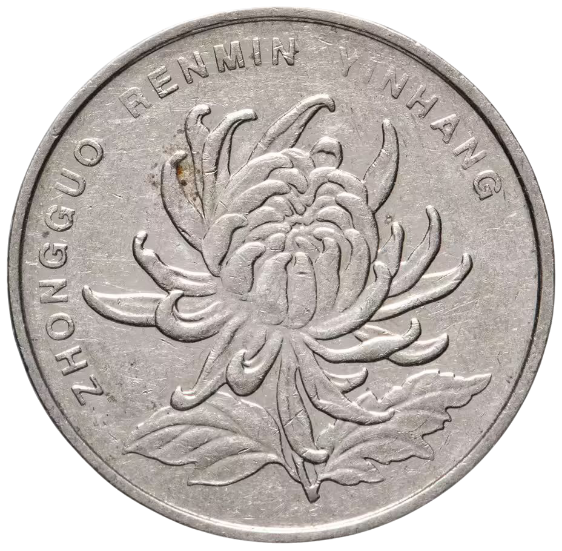
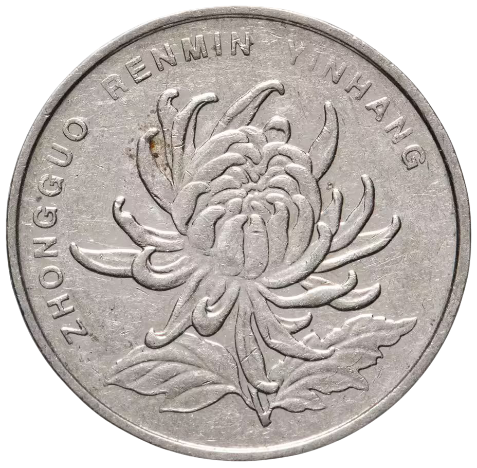

Ицзин, или «Книга Перемен» — это древнейшая система мудрости, зародившаяся в Китае более трёх тысяч лет назад. Она является сокровищницей философских прозрений о природе изменений — вечном потоке превращений, который пронизывает всё сущее.
В основе Ицзин лежит представление о Вселенной как о живом организме, где всё пребывает в движении: день сменяет ночь, зима — лето, покой — действие. Этот ритм отражён в двух фундаментальных силах: Инь (пассивное, принимающее, тёмное) и Ян (активное, творческое, светлое).
Система Ицзин состоит из 64 гексаграмм — символических фигур, составленных из шести черт. Каждая гексаграмма представляет собой архетипическую жизненную ситуацию, а её черты — этапы развития этой ситуации.
Процесс получения гексаграммы
Есть несколько методов, но самый классический — с использованием 50 стеблей тысячелистника (долгий и медитативный) или трех монет (быстрый и популярный).
Метод трех монет:
- Вы берете три одинаковые монеты.
- Задаете мысленно свой вопрос.
- Бросаете монеты. Это повторяется 6 раз, чтобы построить 6 черт гексаграммы снизу вверх.
- Каждому броску присваивается числовое значение:
- 3 орла = 9 (Старый ян → движущаяся черта)
- 2 орла, 1 решка = 8 (Молодая инь → стабильная черта)
- 2 решки, 1 орел = 7 (Молодой ян → стабильная черта)
- 3 решки = 6 (Старая инь → движущаяся черта)
Анализ результата
После шести бросков вы получаете гексаграмму. Но на этом всё только начинается.
- Первичная гексаграмма: Описывает текущую ситуацию.
- Движущиеся линии: Черты со значениями 9 (Старый ян) и 6 (Старая инь) являются «движущимися». Это означает, что они превращаются в свою противоположность (ян в инь, инь в ян).
- Вторичная гексаграмма: После преобразования движущих линий вы получаете новую гексаграмму. Она показывает потенциальное развитие ситуации, к чему она может прийти.
Таким образом, вы читаете толкования:
- Основное толкование первичной гексаграммы.
- Толкования конкретных движущихся линий (если они есть) в первичной гексаграмме. Это самые важные и конкретные советы.
- Толкование вторичной гексаграммы.
Пример: Гексаграмма 1 (Цянь / Творчество)
- Состав: Шесть сплошных черт Ян (9 или 7)
- Образ: Небо, творческая сила, энергия, инициатива
- Совет: Период огромной силы и возможностей. Успех придет через упорство и правильное руководство. Действуйте, но будьте мудры, как дракон, не проявляйте безрассудства.
Если, например, в этой гексаграмме движущей является нижняя черта (9 в первой позиции), то ее текст может гласить: «Скрытый дракон. Не действуй.» — совет проявить смирение и выждать момент, несмотря на общую творческую энергию гексаграммы.
Гадание на Ицзин — это не предсказание судьбы, а глубокий диалог с собственной интуицией. Когда вы бросаете монеты, вы не просто получаете случайную комбинацию — вы прикасаетесь к универсальным паттернам бытия, которые резонируют с вашим текущим жизненным контекстом.
Каждая гексаграмма — это зеркало, отражающее суть момента. Она не говорит, что должно произойти, но раскрывает скрытые тенденции и глубинные взаимосвязи. Через её образы и афоризмы вы получаете доступ к коллективной мудрости поколений, помогающей увидеть ситуацию в новом свете.
Ицзин учит искусству своевременности — умению распознавать благоприятные моменты для действия и периоды, когда мудрее сохранять покой. Это руководство по гармоничному существованию в мире, где изменение — единственная константа.
Обращаясь к Ицзин, вы открываете пространство для саморефлексии и получаете перспективу, которая может осветить ваш путь через сложности и неопределённости современной жизни.
 
